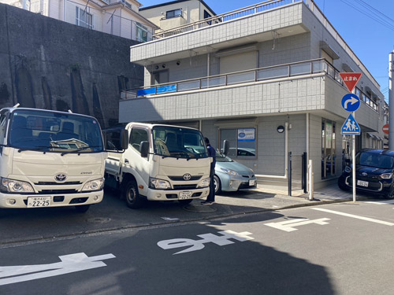
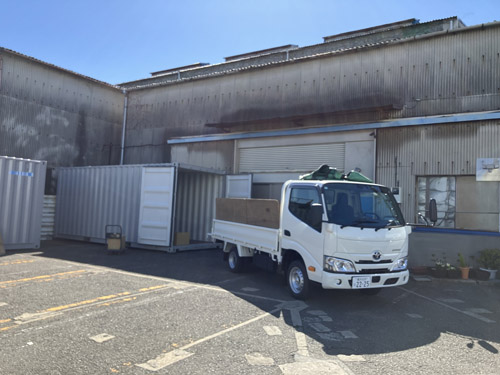

About Us企業情報
この地で100年、蓄積された信頼が
サービスの品質を語ります
不要品は真の意味で不要ではなく、リサイクルを経て新品に生まれ変わります。「循環型社会」の大切さがよく話題となりますが、私たちは100年前からそれを実践してきました。
有限会社糸平は1924（大正13）年に、齋藤糸平商店として創業し、2024（令和6）年に100周年を迎えました。現在のJR根岸線山手駅付近にあった市場を拠点とし、のちに現在の所在地・横浜市中区立野一番地に移転。不要品回収はじめ解体、処理工事など、一貫して物を循環して新たな価値を生み出す事業を積み重ねてきました。
より深く心に寄り添い、お客様の気持ちになってご提案を続けるうちに、介護、終活、さらにペットなど、時代背景に即した新たなニーズにも対応できるよう進化を遂げてきました。
これからも私たちの精神は変わらず、「選んでよかった、任せてよかった」とおっしゃっていただけるサービスを提供してまいります。
代表ごあいさつ
当社の創業以来一貫として資源のリサイクルに関する営業に従事してきました。資源は無限ではありません。
資源のリサイクル、リユース、リデュースがSDGsに貢献し、私たちの生活を豊かにする第一歩です。
当社は今後も資源のリサイクル、リユース、リデュースを通して、親切・丁寧・正確・誠実をモットーにSDGsと社会に大きく貢献してまいります。
会社概要
| 社名 | 有限会社糸平 |
|---|---|
| 代表取締役 | 齋藤栄一 |
| 本社 | 〒231-0845 横浜市中区立野1番地 TEL 045-623-8502／FAX 045-623-8909 |
| 東京営業所 | 〒104-0032 東京都中央区八丁堀3-9-10 TEL 03-5541-3035／FAX 03-5541-3035 |
| 横浜倉庫 | 〒236-0002 横浜市金沢区鳥浜14-10 |
| リユースショップ かもめ2 | 〒143-0012 東京都大田区大森東1-35-4-111 |
| 創業 | 大正13年 |
| 資本金 | 4,000,000円 |
| 事業内容 |
|
- 


- 


資格
- 建設工事業 神奈川県知事許可(般-4)第20977号
- 第一種貨物利用運送 関自貨第1590号
- 産業廃棄物収集運搬許可 東京都 第13-00-14658号
- 産業廃棄物収集運搬許可 神奈川県 01402014658
- 古物商 神奈川県公安委員会 第451325900003号
- 再資源化認定事業者 認定番号N14K-00193
- 遺品整理士 第IS49640号
- 遺品査定士 第AM02540号
- 介護職員初任者研修 第神奈川24-S10702-1-A010号
- レクリエーション介護士2級 10012400342
- 終活アドバイザー 会員番号 A-2024089987
取引先
UR 独立行政法人都市再生機構、横浜市役所、株式会社大林組、日本電設工業株式会社、東京ミサワホーム株式会社
主な機械・車両
クレーン1基、トラック2台、ワゴン車6台、乗用車3台
取引銀行
三井住友銀行、横浜銀行、横浜信用金庫
沿革
| 1924（大正13）年 | 齋藤糸平商店として創業 |
|---|---|
| 1945（昭和20）年 | 横浜大空襲により事業所及び倉庫焼失 |
| 1946（昭和21）年 | 横浜市中区立野1番地にて営業再開 |
| 1953（昭和28）年 | 有限会社に組織変更（資本金500,000円） |
| 1974（昭和49）年 | 横浜市金沢区鳥浜14番10号に工場及び倉庫開設 |
| 1976（昭和51）年 | 資本金3,000,000円に増資 |
| 1984（昭和59）年 | 有限会社糸平に社名変更／資本金4,000,000円に増資 |
主な表彰歴
| 平成8年5月 | 神奈川県労働保険事務組合連合会会長より表彰状をいただく |
|---|---|
| 平成11年3月 | 財団法人住宅管理協会東京支部支部長より感謝状をいただく |
| 平成18年6月 | 社団法人全国産業廃棄物連合会より地方功労者表彰をいただく |
| 平成20年7月 | 神奈川県環境農政部長より環境保全功労者・工業保安功労者の表彰状をいただく |
| 平成21年6月 | 社団法人全国産業廃棄物連合会会長より地方優良事業所表彰をいただく |
| 平成22年11月 | 横浜中税務署所長より優良納税者表彰をいただく |
| 平成25年11月 | 神奈川県知事より環境整備功労者表彰をいただく |
| 令和2年12月 | 環境大臣より環境大臣表彰を受賞 |